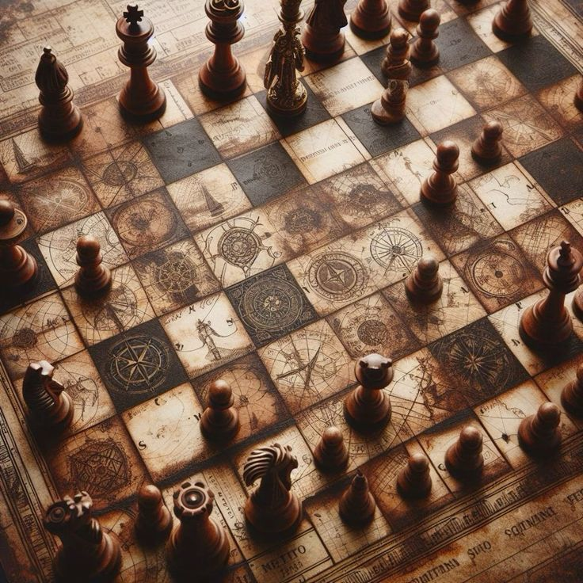
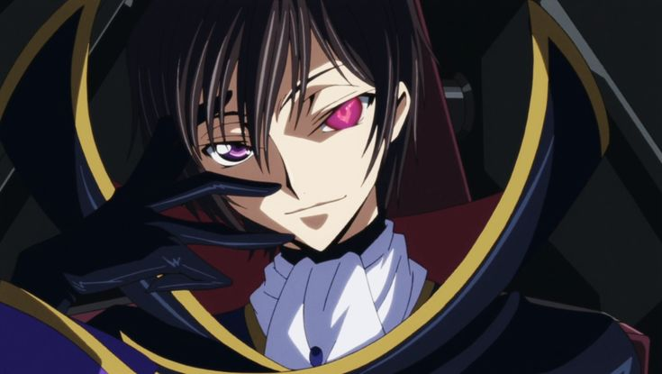

Chess - Originated in India around the 6th century CE as Chaturanga, a game representing the four divisions of the military.
It then spread to Persia, where it was adapted and became Shatranj. From Persia, it continued to spread to the Muslim world and eventually to Europe, where it evolved into the modern game of chess by the 15th century.

Benefits of playing chess

Brings People Together
Teaches You how to win and lose
Helps you realize the consequences of your actions